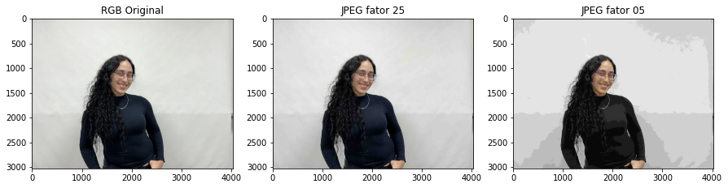
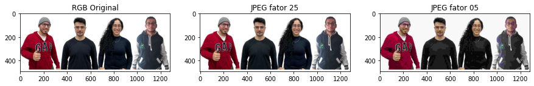
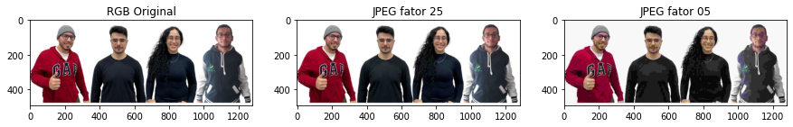
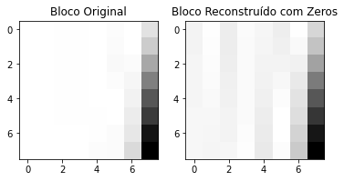
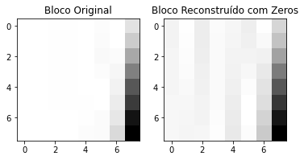
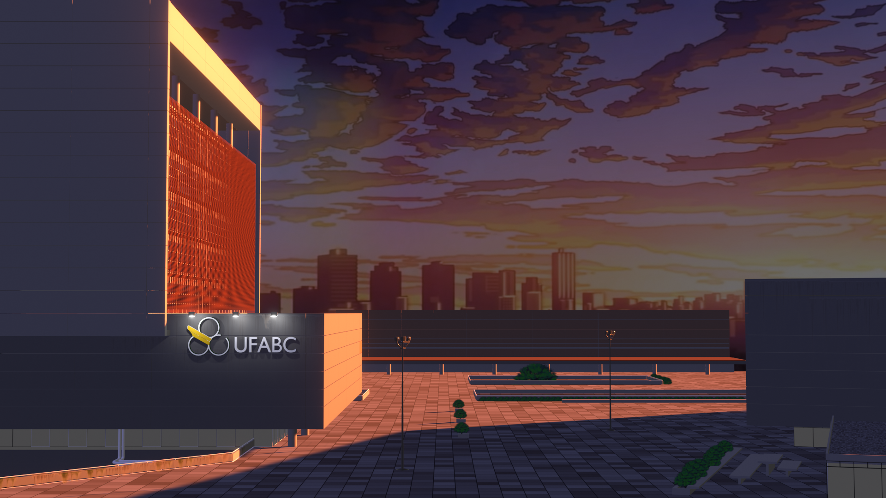

Atividade 3
Atividade 3
Codificação de Imagem por DWT :
Nessa parte do relatório, exibimos as imagens que foram codificadas pela transformada DWT no Colab.
Para a realização dessa parte do laboratório, seguimos os procedimentos descritos no Colab, os códigos podem ser acessados através do link:
https://colab.research.google.com/drive/1gfLH1pNJMqEa77MMOJEUwMoY38vSsQq5?authuser=2
As fotos mostram os integrantes Beatriz, Caleb, Gabriel e Vitor, respectivamente e por fim a foto do grupo inteiro.
Imagens de Codificação de Luminância (P&B) com DWT:
Explicação.
Análise de resultados:


Cálculo do Erro Quadrático Médio (MSE) e da Relação Sinal Ruído de Pico (PSNR)
Explicação
Análise de resultados:


Imagens do Teste das Funções de Multiresolução wavedec2() e waverec2()
Explicação
Análise de resultados:


Imagens de "Montagem" com wavedec2() e wavedecn():
Explicação
Análise de resultados:


Reconstrução de Imagem Colorida
Análise de resultados:



 

Reconstrução da Imagem colorida e Cálculo da MSE de cada plano de cor e da PSNR total
Explicação
Análise de resultados:
 

Reconstrução Cr Cb :
Explicação.
Análise de resultados:
